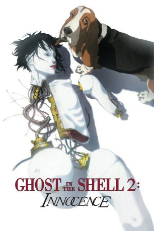

#2228 Ghost in the Shell 2 - Innocence
Alternativ: Ghost in the Shell 2: Innocence (Englischer Titel)
 
 IMDB-Wertung: 7.6 / 10
IMDB-Wertung: 7.6 / 10  Metascore: 66
Metascore: 66 
Japanischer Science-Fiction-Anime aus dem Jahr 2004 und Nachfolger von "Ghost in the Shell". Im Jahr 2032 setzt sich die Bevölkerung aus Menschen, Androiden und Cyborgs zusammen. Zwei Polizisten einer Eliteeinheit werden auf auf eine mysteriöse Mordserie angesetzt. Ein weiblicher Sexroboter bringt scheinbar wahllos seine Freier um.
Jahr: 2004
Dauer: 100 Minuten
FSK: 16
Land: Japan Studio: Toho CompanyTonspuren: DTS - ,
Untertitel: Deutsch, Englisch,
Auflösung: 1080p (1920x1040) Größe: 8151 MB
Genre: Thriller, Drama, Sci-Fi, Animation/Trick
Regisseur: Mamoru Oshii
Drehbuch: Shirow Masamune, Mamoru Oshii, Richard Epcar, Mary Claypool
Soundtrack: Kenji Kawai
Darsteller:
Datei: X:\HD-Anime-Collections\Ghost in the Shell\Ghost in the Shell 2 - Innocence (2004, FSK16, 1920x1040).mkv seit 22.10.2015
Festplatte: Gemischt-01+Anime
 Es gibt insgesamt 15 Filme in der Gruppe 'HD-Anime-Collections\Ghost in the Shell'
Es gibt insgesamt 15 Filme in der Gruppe 'HD-Anime-Collections\Ghost in the Shell'